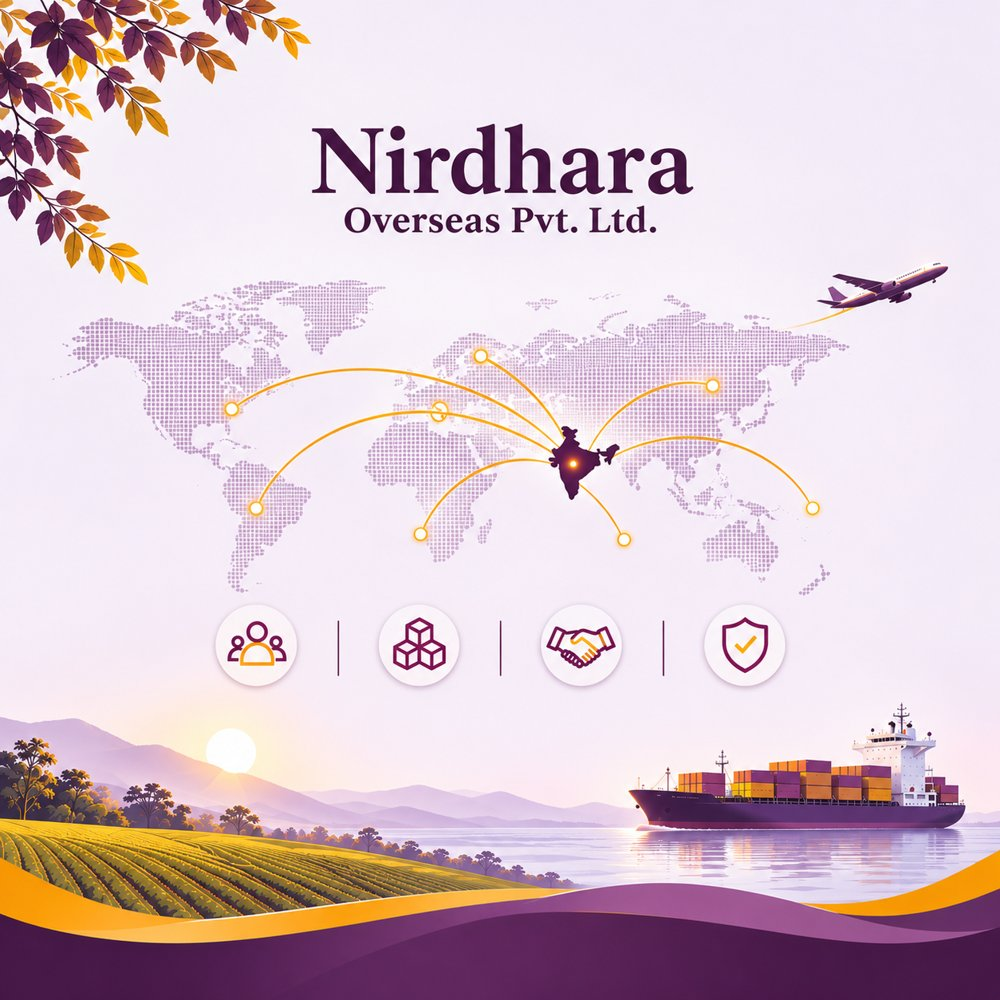

About Nirdhara
A merchant exporter of dehydrated onion, garlic and ingredient baskets.
Company overview
Nirdhara is built on an entrepreneurial vision to connect with international food businesses. We aim to establish lasting partnerships through responsible customer-first approach.
Based in India, Nirdhara Overseas operates with access to the country's diverse agricultural sourcing network, connecting domestic suppliers with international buyers.
Founded on a Shared Vision, focuses on supplier coordination, product sourcing, buyer communication and export operations, working together to make the sourcing and order fulfilment process smooth and reliable.

Mission
To become a trusted global partner in the trade of Indian agro products, recognised for integrity, reliability and lasting business relationships.
Vision
To connect global food businesses with quality Indian agro products through dependable sourcing, buyer-focused solutions and transparent export practices.
Business values
Customer-Centric
Adapting product specifications, forms and packaging to meet buyer requirements.
Product Diversity
Offering a growing range of dehydrated vegetables, spices and food ingredients.
Reliable Partnerships
Building dependable relationships with suppliers and buyers through trust and consistency.
Global Standards
Aligning product requirements and export processes with applicable international market expectations.